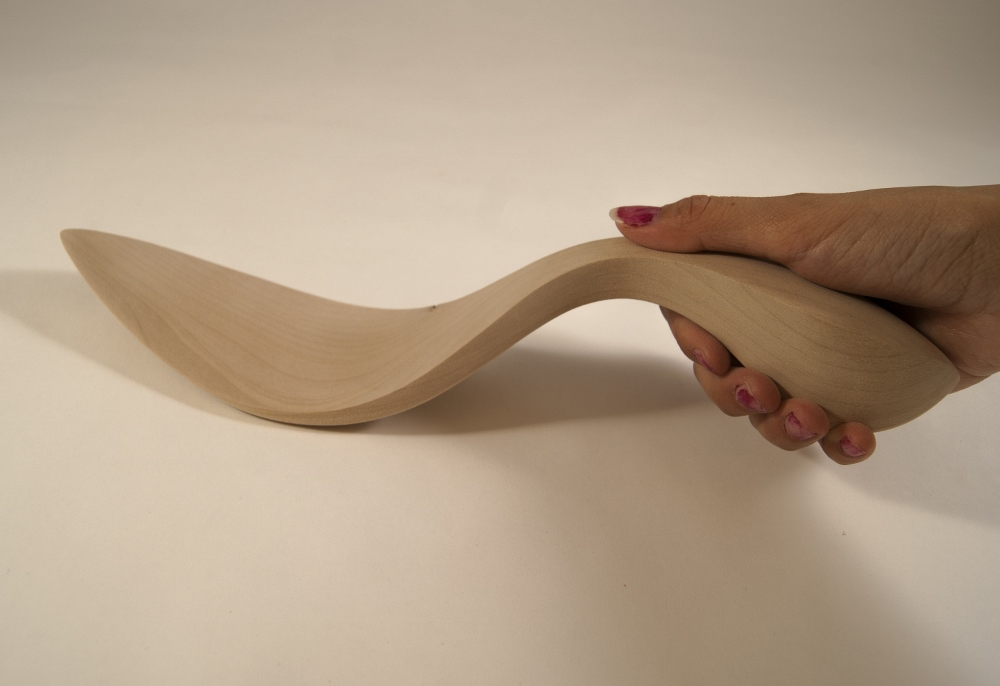
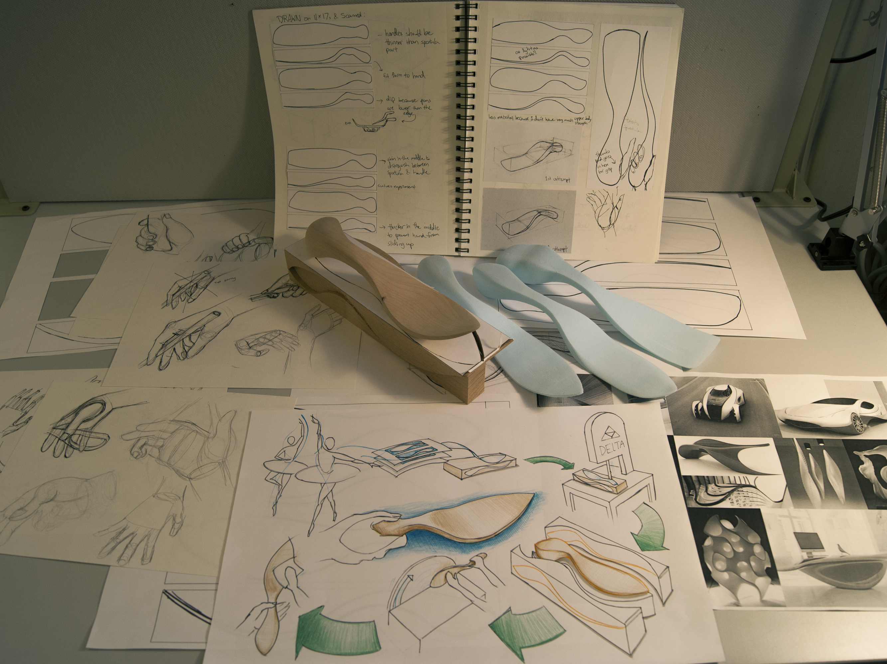

Geoform

This wooden spatula was an exploration of flow forms, ergonomics, and an introduction to wood working. The spatula had to be empathetic to the user and have good visual transitions between the different edges. The spatula started out as just combinations of curves but after exploring negative space, composition, and subtle implications in form, I imroved its visual language.


After figuring out the pain and comfort points on my hand, I designed a spatula that was comfortable to hold and inspired by the curvature of dancers. The final wooden model was crafted using the bandsaw, sanding machines, and hand sanding.